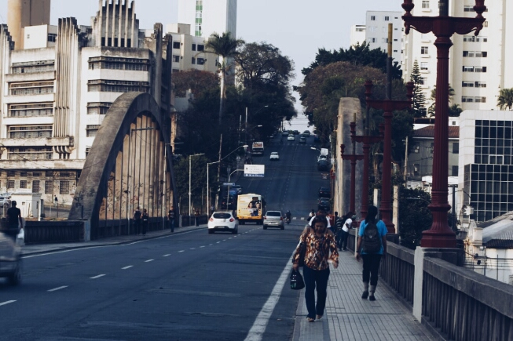
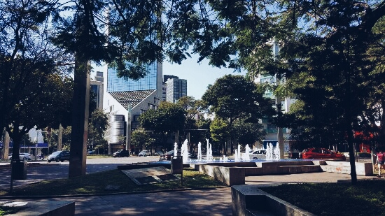

Bairros de BH


Floresta
O Floresta é um dos bairros mais tradicionais de Belo Horizonte, com prédios e arquiteturas antigas, como os da rua Pouso Alegre.
Savassi
A Savassi é um dos melhores points de BH, com restaurantes e bares maravilhosos. É possível encontrar todos os tipos de comida por lá.
Sagrada Família
Bairro onde vivi por 30 anos. O Sagrada Família, tem histórias maravilhosas, e claro marcaram minha infância.